I have just
started learning about pitch shifting, and built my first pitch
shifters in Pure Data object classes. This page will be dedicated
to illustrations which pinpoint at typical bottlenecks of the topic.
Expanding or compressing a signal on the time-axis is a sure way to
alter pitch. All frequency components are slowed down or sped up
with the same ratio, and this
will preserve their harmonic relations. This happens for example when
playing a
tape at slower or faster speed. Here is a visual impression of slowing
down a waveform:
| 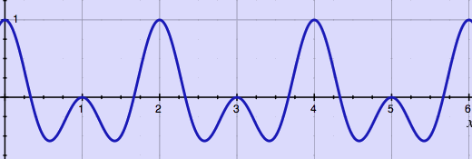 |
original wave
| 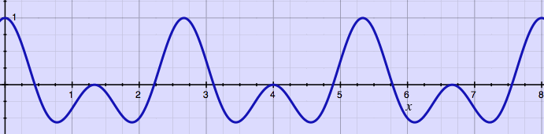 |
the same wave played at 3/4 of the speed
Time duration of this slowed down wave is extended to a factor
4/3, the inverse of the speed factor. In case such stretching is done
in digital domain, samples are inserted to produce the longer signal
length (upsampling).
In many practical situations however,
we want time stretching OR
pitch shifting, and not both. Time stretching is popularly understood
as a change in time duration with preservation of pitch. Pitch shifting
is then the opposite: a change in pitch without altering the time
duration. While it is still clear what time duration means in this
sense (the length of a played sound expressed in seconds or
milliseconds), what is actually pitch? The fundamental frequency of a
harmonic sound is called it's pitch. Does it mean that inharmonic
sounds and noises can not be pitch shifted? Possibly. Anyway, a
signal's period or fundamental frequency (if present or expected),
should be the elementary unit of concern, as it transfers the pitch
sensation.
Pitch shifting is in fact a combination of time stretching and up-
or downsampling. Let's first look at an ideal case of time stretching.
The original signal from the above example will be stretched to 4/3 of
it's length, while preserving the pitch. By coincidence, this can
conveniently be done by adding one period:
original wave
| 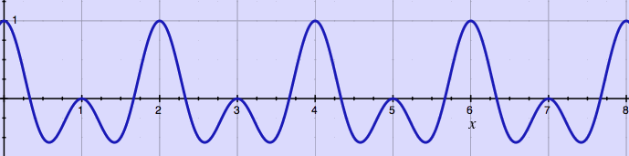 |
the same wave time-stretched to 4/3 of it's length by adding one period
In this time-stretched wave, the time duration is expanded while the
pitch is preserved. Subsequently, the time-stretched wave can become
pitch-shifted wave by reading it at faster speed. In digital domain
this means leaving out samples, downsampling:
| 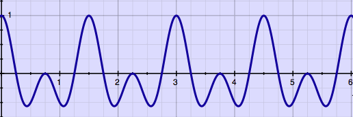 |
time-stretched-and-downsampled wave: raised pitch
With respect to the original wave, the length is retained while the
pitch is raised. Here is the original wave once more for comparison:
original wave
It may be confusing that a raised pitch is associated with an expanded
time duration and also with downsampling. That is just how it is. The
opposite is also true: to lower a pitch sensation, you will need to
take away some of the original sound's periods, and then upsample. Why
not do an illustration of that as well. Here is the original wave
'time-stretched' to 2/3 of it's length (it has shrunk rather, but that
is not part of the terminology):
| 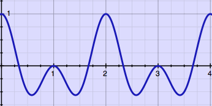 |
wave reduced to 2/3 of it's length by cutting one period
Now upsample this wave till it has the original length, and the
effect is a lowered pitch:
| 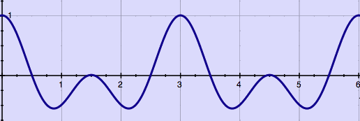 |
time-reduced-and-upsampled wave: lowered pitch
From these examples, it becomes clear that pitch shifting is a
matter
of taking away samples at some points and adding in samples somewhere
else. The net
result has identical size, but
the trick is to remove and insert at the proper places. Time stretching
is a matter of removing or inserting larger sections while keeping
periods intact. Resampling is a matter of removing or inserting samples
as spreaded and smooth as possible, while expanding or contracting the
periods.
I have
illustrated that time stretching should preferrably be done by adding
or removing
full periods, but this is not always possible. Some signals, or regions
in it, are not periodic. Even when a signal is periodic, finding and
using that information may be troublesome. In real life, pitch
shifting is as easy as folding a sphere from a piece of cardboard.
Without decent analysis, adding
or removing portions of the signal
could look like this:
| 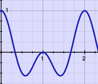 |
| 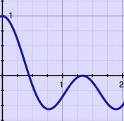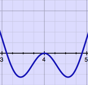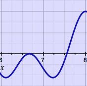 |
Such microscopic cut & splice technique requires at least some
amplitude
crossfading, to avoid clicks at the joints. I found it fun to learn
that electro-mechanincal machines for time stretching and pitch
shifting were already
invented and produced decades ago.
One typical situation where tempo and pitch must be controlled
independently, is when recorded radio interviews must be sped up, while
the pitch of the voices should remain unaltered. Around the 1960's, the
Springer Tempophon with rotating tape heads was developed, and could do
such jobs. Several composers, notably Stockhausen, were fascinated by
this machine and used it in electronic composition.
The rotating tape heads read the signal at a speed independent from
the tape playback speed. The tape speed relative to the machine
determines the time duration, while the playback head speed relative to
the tape determines the pitch. The heads can move along with the tape
direction
for lower pitch, or move in the opposite direction for higher pitch.
Six tape heads in a drum were used in this mechanical construction. I
have never seen a Tempophon with my own eyes, but from descriptions I
derived it's working principle. Here is a graphical impression:
| 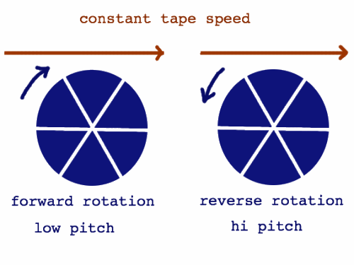 |
It is comparatively simple to emulate a basic rotating tape head
machine
in digital domain. Since there are no physical constraints forcing
virtual tape heads to be round, only two of them are needed, instead of
six. Below, it is done as a Pure Data patch:
| 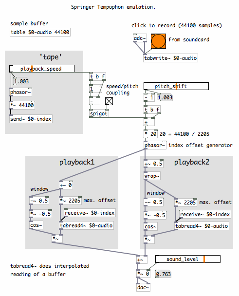 |
The signal buffer is read by two reading objects (tabread4~).
Reading can be done at fractional (= slower or faster) speed. An index
represents the 'tape position'. The two 'playback heads' have
fluctuating offsets from this index, in alternating phases. These
phases have overlap, so most of the time you hear both playback heads.
The offset fluctuates linearly between zero and a defined maximum. The
offset maximum is 2205 samples in the patch, but that could have been a
different amount, like 1000. The offset maximum is sort of equivalent
to the distance between playback head centers in the rotating drum.
It is also possible to skip variable playback speed and do realtime
pitch shifting on an input stream, using a delay with two taps reading
at variable speed. Below is a simple Pure Data patch for doing that.
For simplicity, the maximum delay time is fixed again, to 50
milliseconds:
| 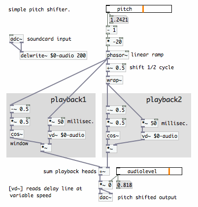 |
The playback outputs are subjected to smooth amplitude
regulation, very similar to the method of window and overlap used in
Short Time
Fourier Transform. Signals are read in overlapping
frames while being multiplied with a window function, a 'raised cosine'
in most cases. I have copied the following graph from the page 'window & spectral
filtering' to illustrate the window and overlap principle:
 overlapping frames with Hann windowing |
In the case of Short Time Fourier Transform, the input signal is
normally read at unity speed, and window & overlap is only required
to relieve the 'boundary effects'. Details of these effects are
illustrated on the forementioned
page. The sum of windowed and overlapped input frames is identical
to the input signal in the case of Fourier Transform. Here is an
impression:
| 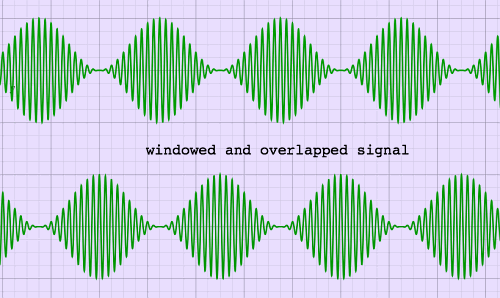 |
With the rotating tape head principle, things are sligthly
different. Although the sudden jumps of the frame stitches are now at
the window's zero points, the phases in the two playback signals
do not necessarily coincide. That is because the frames were resampled
at a speed different from the original. Very
few frequencies will be exactly in phase, and the rest will be out of
phase to some degree. This results in phase cancellations which are
prominent in the region of maximum overlap. The most unfavourable phase
condition is with the window size being an odd multiple of an input
frequency. Here is an example:
| 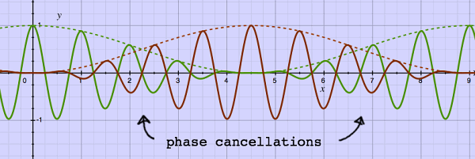 |
The window type makes a difference for the overall result. For
Fourier Transform, the Hann window is one of the favourites. The sum of
overlapping Hann windows is always a constant. For a Tempophon
emulation with it's phase-incoherences, we may prefer another window
function.
When two signals with independent phase relations are summed, the
magnitude is not doubled, but increased to 1.4 instead. This holds for
the pitch-shifted frames as well. Therefore, when using Hann windows,
there are overall sound level dips at the locations of maximum overlap.
Positive sine windows do not sum to a constant, but produce peaks at
the locations of maximum overlap, and these peaks do exactly compensate
for the statistical loss of energy caused by phase cancellation. It is
the same amplitude curve as found in the crossfader section of a DJ
mixer. Here is a plot, showing overlapping sine windows and their sum:
| 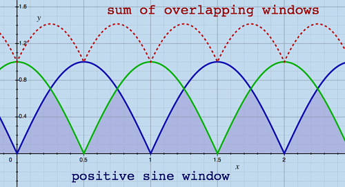 |
This window type produces less overall amplitude modulation when
overlapping unrelated phases, therefore it is better suited for the
Tempophon emulator. Notice however, that it will produce more amplitude modulation when
phases happen to coincide. Thus, amplitude modulation is not eliminated
with this window type, only statistically reduced.
Because the frames were taken at different moments in time, overlap
areas actually present repetitions, smoothed by the window
functions. Apart from spurious modulation, a general comb-filter effect
is perceived. Specially with pitch factors above 1, it has the
acoustics of a small room with tiled
walls. I want to return to the Hann window for a moment,
because this window type has relatively little overlap area:
| 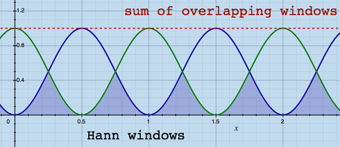 |
With less overlap area, there is also noticably less comb filter
effect. Is there not a window type combining the good aspects of both,
while leaving out the disadvantages? I was thinking of something like
this:
| 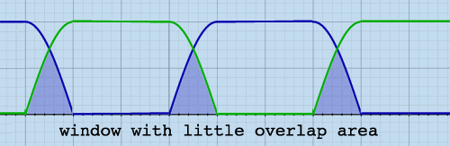 |
This fantasy window is not a mathematical function, and I have partly
drawn it by hand. But the crossover region has sinusoidal curves again.
This window can be constructed in parts from mathematical functions.
The window has 6/6 parts, and is non-zero over 4/6th of it's
periodicity:
| 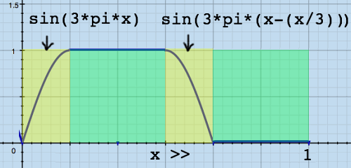 |
I have built the delay lines and two different windows into one Pure
Data object [tempophon~], to check the effects. Below, you can see
typical modulation patterns resulting from the window types. Although
the magnitude dips are equally deep in both cases, the minimum-overlap
window leaves a larger area untouched. This reduces the 'echoic chamber
effect' somewhat. At the same time it creates extra (but not per se
louder) modulation frequencies because of it's more complex shape.
| 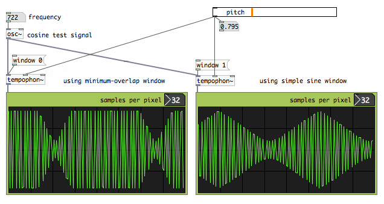 |
So far I am demonstrating and stressing the most problematic
frequencies everytime, but there are also frequencies which come
perfectly steady through the pitch shifter. The Tempophon emulator is a
'dumb' pitch shifter, it does not try to tune it's process to the input
frequencies. With the above window types, it is even the case that when
a frequency comes through unmodulated, it's first overtone would suffer
the heaviest modulation. Here is an illustration:
| 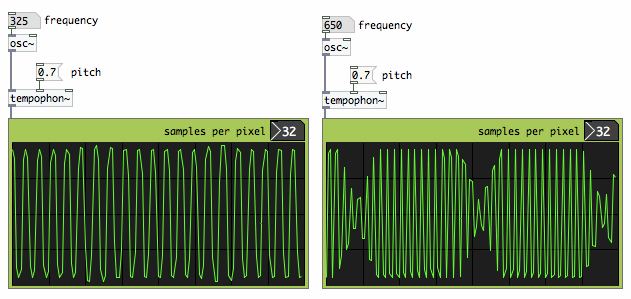 |
Allmost any sound material will be degraded by
this simple pitch shifter process. Due to unconditional processing, and
the window type being optimized to inconsistent phases, harmonic sounds
will be affected as much as any other sound. Below is a typical result
plotted
for a harmonic test signal:
| 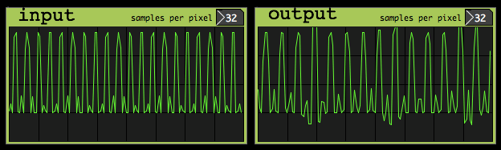 sum of two harmonics transposed with pitch factor 0.7 |
To get better results, the signal content must be analysed in some
way, and the microscopic cut & splice actions should match the
signal's waveshape whenever possible. Several time domain methods
exist, each analysing the signal in a different way. Unfortunately,
such methods are way more complicated than the basic window &
overlap principle itself, and they can not be reproduced with a couple
of Pure Date objects.
PSOLA, Pitch Synchronous Overlap Add, tries to find the pitch
of the input signal, and apply a grain size of 2 or 4 times the
fundamental frequency. Finding a signal's pitch is a hazardous job.
Polyphonic sounds or sounds with 'missing fundamental' can give erratic
analysis results.
WSOLA, Waveform Similarity/Synchronized Overlap Add, does not need
knowledge about fundamental frequency or
harmonic content. Instead, it keeps the grain size fixed, while the
best locations for overlap are found by moving the grains and computing
the cross-correlation. Like playing
around with jigsaw-puzzle pieces and finding out how they fit best. The
method was proposed by Verhelst & Roelands, see for example [this
link].
Olli Parviainen has published an open source C++ library for time
stretching and pitch shifting, using a WSOLA-like stretching algorithm.
This is the SoundTouch library, incorporated in many packages amongst
which Ardour and Audacity. There is also an example utility
SoundStretch for audio file conversion (pitch, timebase and playback
rate). Source code and binaries, together with a comprehensive article
on time/pitch shifting basics, are on http://www.surina.net/soundtouch/index.html.
I have built SoundTouch into a Pure Data external [soundtouch~].
Compare the test plot below with the equivalent test from
[tempophon~] above. The waveform similarity based method
is a great improvement on the elementary rotating tape head emulator.
| 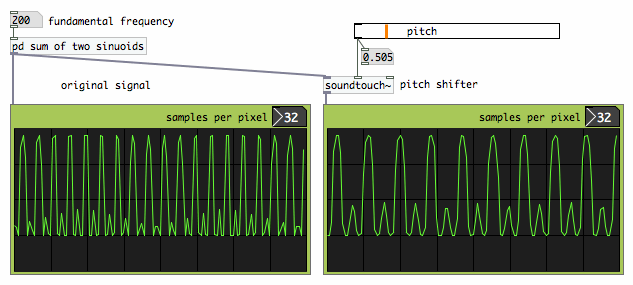 |
With harmonic sounds, the SoundTouch routines can find spots of best
match for overlapping. With inharmonic combinations, this is virtually
impossible because the waveform shows no repetition, at least not
within the short time frame where SoundTouch must find it. This is not
a defect of SoundTouch, but an inherent aspect of time domain pitch
shifting. Therefore,
the method does not work equally well for any arbitrary sound material.
It works best for speech, monophonic instruments, and music with simple
harmonic ratios or low complexity. Being a time domain method,
SoundTouch shows some other side effects of cutting / inserting signal
fragments: with downward pitch shifting, short attacks can easily get
lost, while upward pitch shifting can induce audible repetition. With
modest transposition rates, these effects are of course less prominent
than with extreme settings.
The SoundTouch library is well commented and user-friendly. The code
is efficient: realtime pitch shifting with SoundTouch is responsible
for only 1% CPU time on my 2 GHz MacBook. Building a C++ library into
Pure Data, which is pure C, is however not completely straightforward.
This topic is described on the next page, [soundtouch~]
for Pure Data.
In frequency domain, a completely different handling of phase
inconsistencies is possible. From Stephan Bernsee's comprehensive
explanation on www.dspdimension.com,
I learned how to do pitch shifting in frequency domain. It is quite
abstract matter, and I always need a lot of illustrations to get hold
on the elusive sinusoids. Let me illustrate the actual problem once
more with a graphical
example. Here, the overlapping segments of a stretched sinusoid are not
windowed, to clearly show a phase shift:
| 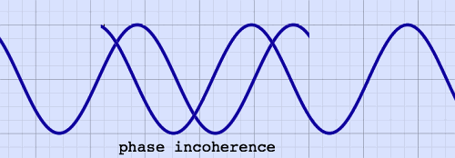 |
Can we not just force the phases of successive signal segments to
neatly coincide? This would be possible when all frequency components
are isolated. A time shift has different phase shift effect for each
frequency, therefore they must be treated separately. With all
frequencies isolated, their phases could be registered, and the phase
in
the actual frame be synchronized with the preceding frame.
Isolating frequency components and shifting their phases, means to
analyse, break up,and
resynthesize the signal. To do that, we need to go to 'frequency
domain', by applying Fast Fourier Transform,
FFT. Lots of illustrations on this topic can be found in the FFT
section, starting with the page Fourier
Matrix. Complex numbers are also part of this story, and they are
introduced on the page Trip to
the Complex Plane.
Superficially, it could seem that pitch transposition in frequency
domain is quite simple: just tranfer the FFT bin contents to other
bins, depending on the pitch factor. Like shrinking or expanding the
spectrum:
| 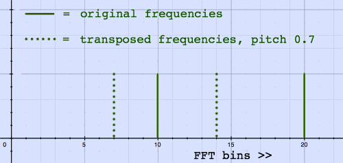 very crude representation of transposed frequencies |
This view is not complete nonsense, but in practice, things are
complicated. Be prepared for loads of details. A spectrum does not hold
frequencies! It holds complex numbers, which can be mapped to other
complex numbers, telling amplitude and phase of the initial complex
numbers. The FFT bin numbers represent harmonic frequencies wich served
as correlation functions to calculate the spectrum. For realistic FFT
sizes, these bin harmonics are some ten, twenty, or fourty Hz apart
from each other. So how do we get informed about precise frequencies?
If you would plot real and imaginary coefficients of one FFT bin for
successive frames, you would see a kind of clock. When a steady
sinusoid is correlated by that bin, the clock ticks at a regular speed.
For successive, non-overlapping FFT-frames, a non-zero speed indicates
by
definition a frequency correlation which deviates from the FFT bin
center frequency. Here is a visual impression on the complex plane:
| 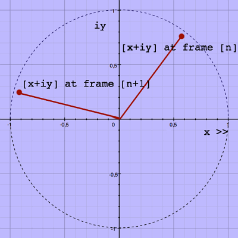 |
If the above stated sounds rather vague, it is because I am trying
to express things carefully. Frequency domain information is not that
straightforward. Framewise Discrete Fourier Transform brings spectral
leakage, and the correlation of one single input frequency is spreaded
to some extent over all FFT bins. Therefore, the data should be
interpreted with reserve. Here is a (full complex) spectrum
illustration, copied from the page FFT Output, showing an example
of spectral leakage from one single input sinusoid:
| 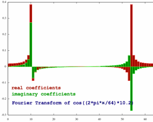 |
The plot has a lot of coefficients, suggesting the presence of
frequencies which were not actually there. Still they are all
representatives of the input signal, in a way. Now imagine we employ
the clock phenomenon, the phase increments, as an indicator of input
frequency. This would give a lot of different answers.
To reduce ambiguity, an increased FFT frame overlap is recommended,
with 4 times overlap as a minimum. Why does that help? Let me try if I
can put that to words, and pictures. The clockwise or anti-clockwise
rotation of the
spectrum coefficients in their first appearance as [x+iy] coordinates
give them room to express a phase-shift inbetween +/- pi radian, being
+/- half a cycle. To the earlier example, I have added a green pair of
points, showing a clockwise rotation which is by convention called
negative:
| 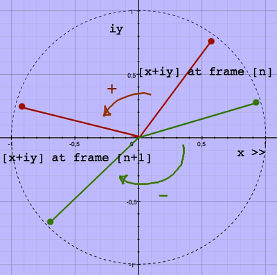 |
This +/- half cycle room must be interpreted respective to the shift
of the FFT bin center frequency over successive FFT frames. With no
frame overlap, the bin center frequencies themselves will shift by
multiples of a full cycle. The 'phase clock' can express a deviation
within the bin, below or above the bin center frequency, and it has a
total range of one cycle as well. For example, if the clock in bin nr
10 shifted half a cycle in positive direction, this indicates a
frequency of 10.5, expressed in unit bins or FFT frame harmonics.
Because of the spectral leakage, many coefficients have too little room
to express the input frequency, as they can only express what fits in
their particular bin.
| 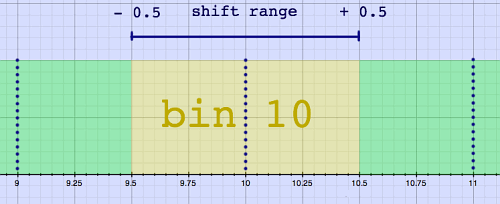 shift range with no overlap |
With four times FFT frame overlap, the bin center frequencies will
shift multiples of only a quarter-cycle, respective to the input
signal. Here is an impression in time domain:
| 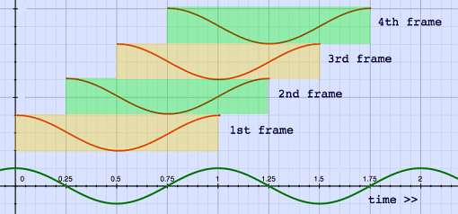 FFT with four times overlap |
But the coefficients still have the +/- half cycle range at their disposal, and they can now express a shift up to four times the bin center frequency shift. This means that they can express frequencies which belong in other bins!
| 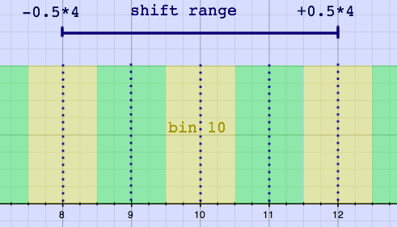 shift range with four times overlap |
The corrected phase shift (in cycles) and with overlap = 4 is now
expressed this way:
step 1: phase-shift (in cycles) - (bin nr / 4)
step 2: wrap result in the +/- 0.5 cycle interval
step 3: multiply by 4
And the frequency, expressed in the form of FFT harmonics or unit
bins, is this sum:
| 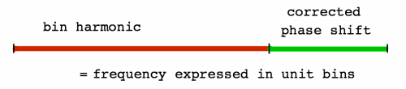 |
If a frequency is computed this way, it can be simply multiplied by
the pitch shift factor to find the new frequency. This new frequency
has to be transferred to the appropriate FFT bin, together with it's
amplitude information. To find the new bin, the original bin nr is also
multiplied by the pitch shift factor. Bin numbers can only be integers,
and must be rounded in the direction of zero.
When the pitch-transposed frequency is in it's new bin, all the
correction steps should be undone, now with the new bin harmonic number
as a reference. This would mean:
step 1: subtract the bin harmonic number
step 2: divide by overlap
step 3: add the bin center frequency's phase shift
step 4: wrap into the +/- 0.5 bin interval
By the way, there happens to be a lot of mathematical redundancy in
these steps. Never mind. The result expresses a phase shift again,
still expressed in unit bins. Now comes the crucial step. The original
phase shifts were actually result of phase differentiation. Now, to
build the new spectrum, the transposed shifts or differences must be
integrated with the transposed shifts of the preceding frame. Recall
what happens with differentiation: the constant is lost. In this case,
the constant was the absolute phase position, and it is lost. That was
exactly the intention.
The integrated transposed phases, together with the amplitude
information, can be converted to real and imaginary parts in the
regular fashion with cosine and sine functions (which want phases
expressed in radians of course). And then finally, back to time domain
with inverse FFT.
This was a long journey to get the phases neatly glued together, and
I have even omitted some practical details. The method is
CPU-intensive, not so much because of the FFT's, which are efficient
enough, but because of the trigonometric functions atan2, sin and cos.
There is also an option to do the actual transposition in time domain,
with fractional reading speed like in the rotating tape head recorder,
and do the phase integration in frequency domain. This approach is
described for Max/Msp by Richard Dudas and Cort Lippe on http://cycling74.com/2006/11/02/the-phase-vocoder-–-part-i/.
More than about CPU-load, I am concerned about the result. I have
built the frequency domain pitch shifter into a Pure Data object
[pitchshift~], so why not repeat the harmonic cosines test? The plots
below show no amplitude modulation, and this holds for most
frequencies. Instead, another unwelcome 'feature' has appeared: some
frequencies are almost killed.
| 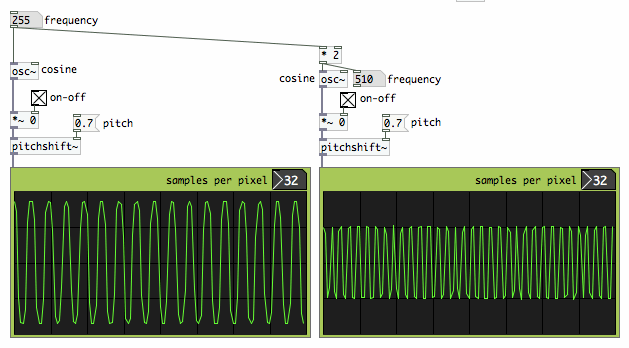 |
Does it indicate some bug in my code? I do not think so. The amplitude differences are a notorious side-effect of elementary frequency-domain pitch shifting. What is the cause of it?
When starting up the pitch shifter, the phase
integrator buffer is initialized with zero's for all bins. After all,
there is no
information yet at that moment, no preceding frame. If there is no
significant input signal, there may be some noise, and the phase
integrator buffer content gets randomized. When I start sending the
test cosine in, the integrated phase differences make a reasonably neat
pitch-shifted cosine output. But the phases have inherited the
randomness of the preceding noise. The bins that should together
reproduce the full cosine, may now partly phase-cancel each other! Look
how orderly a cosine's phase spectrum normally is. We can not randomize
this with impunity:
| 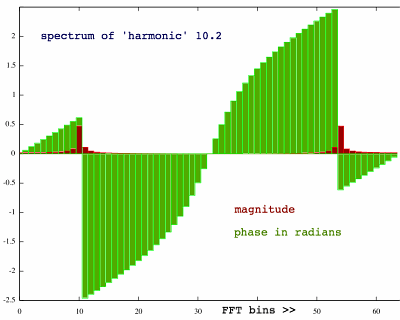 |
With the phase-diffentiator-integrator model, the output sounds inherit
their absolute phase positions from their predecessors, not from the
sound source. Therefore, it is not predictable what amplitude effects a
frequency will suffer. This is illustrated by the patch below, where
one cosine test signal is used, and the only difference is the moment
when I start to send the signal to the pitch shifter. The output
amplitude is different at every restart.
 |
The randomisation of absolute phase, and resulting amplitude
effects, induce the sound character of comb filtering. Nothing can be
done about this with simple means. In fact, what we want is to start a
pitch-shifted sound with absolute phases, and then continue it with
relative phases. Finding start-points, and keeping together all the
bins that correlate one sound source, is really complicated stuff. For
the
moment, it is too difficult and time-consuming for me to explore. But
at least, doing all these illustrations gave me a better understanding
of the issues. It all boils down to the fact that FFT can not resolve
single frequencies without spectral leakage.
Some detailed articles presenting frequency domain solutions are
published. There is a comprehensible text by Axel Roebel on http://www.mp3-tech.org/programmer/docs/dafx32.pdf.
An open source library for frequency domain pitch shifting with
phase-resynchronisation is available from rubberbandaudio.com.
A different approach is developed by Stephan Bernsee in his work for
Prosoniq and his own Dirac library. From minuscule snippets of
information, I gather that these methods operate in time/frequency
domain, employing complex-valued wavelets. It would be fascinating to
learn more about that. Unfortunately, these inventions are too precious
to be shared in the public domain. The same holds for the widely
praised Elastique technology from zplane. These are closed source
libraries which you can get
(Dirac LE) or buy, not learn from.
By definition, it is mathematically impossible to perfectly isolate
frequencies within a real-world signal. Therefore, perfect pitch
shifting seems to be a mission impossible, no less than building a
perpetuum mobile. A simple, brilliant solution will probably not be
found. Instead, advanced methods focus on many details of analysis in
order to approximate the ideal result. All together, good quality pitch
shifting techniques go far beyond
the dsp hobbyist level. Considering these circumstances, it is
fortunate that at least a few people have published the source code of
their time stretch / pitch shift routines, so we can build it into
applications of choice. The next page describes how Olli Parviainen's
SoundTouch library can be built into the real time dsp environment Pure
Data.